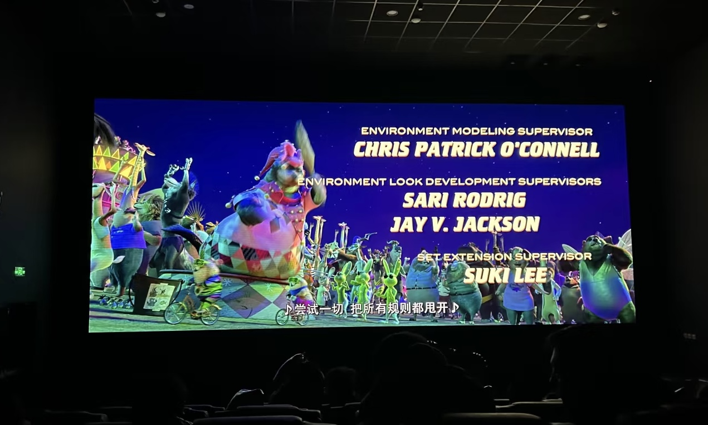

By David
A lobby wall is the hardest interior position to specify, because it is read from outside in daylight, from the door in half-light and from inside in the evening, and a single brightness figure has to work in all three. The constraints are different from a boardroom or a control room, where the light is controlled.
This guide covers what a lobby or entrance position demands of a dvLED wall, and where the specification decisions land.
The Daylight Problem
A lobby is frequently lit by the same glass the screen faces, and the screen has to hold up against it.
Two things follow. Brightness needs headroom over the measured light level, not equality with it, because LED output declines over the life of the screen and a wall specified at exactly the ambient level looks dim long before it fails. And the surface finish matters more than it does elsewhere, because a glossy surface reflects the glass and lifts the black level, so a matte, high-contrast surface reads better in the same light.
Where the wall faces glazing that receives direct sun for part of the day, an exterior-grade brightness may be needed even though the installation is indoors. That is a measurement rather than an assumption.
Reading from Outside, the Door and the Desk
A lobby wall has three audiences and the content has to work for all of them.
From outside, the wall is seen at distance and at an angle, so large type and high contrast matter more than fine detail. From the door, it is seen briefly and obliquely, which favours a simple image. From inside, it is seen for longer and closer, where detail is visible and where any non-uniformity shows.
The practical consequence is that the specification should be set by the closest position, while the content is designed for the farthest. Buying the finest pitch for a wall read mainly from the street spends money on detail nobody sees.

Service Access in an Occupied Building
A lobby is in use all day, which makes service access a design decision rather than a maintenance detail.
A front-serviceable cabinet lets a module be changed from the face of the screen without closing the space or erecting access equipment. A wall that must be serviced from behind needs a void, and in a lobby that void competes with the building services.
Where the wall is high, the access question becomes the dominant cost of any future repair, and it should be settled when the wall is designed rather than when the first module fails.

Structure and the Surrounding Finish
The lobby is where a display is most visible as an object, so the junction with the building matters.
Three details are worth fixing early. The reveal around the screen and whether it is flush or proud. The substrate, because a lobby wall is often a lightweight lining rather than a structural wall. And the route of the power and data, which should be planned with the ceiling or floor strategy rather than added as a surface run in a finished space.
Where the screen sits above a doorway or within a feature wall, the geometry should be confirmed at design stage, because changing it after the lining is closed is expensive.
What to Confirm Before Ordering
Four items settle a lobby project. The measured worst-case light level, including sun through glazing. The nearest viewing position, which sets the pitch. The service access method, front or rear. And the delivered cost to site, including installation, on a named delivery term.
Our factory runs 8 IC production lines and 7 LED SMT production lines under ISO 9001:2015, with CE, FCC and RoHS certification, a 15 to 20 working day lead time and a three-year warranty, and issues cut sheets and dimensioned drawings for coordination.
FAQ
For this requirement our range covers it directly: the COB CV-PRO fine-pitch series the RH-PRO fine-pitch COB.
Related Articles
Get Factory-Direct Pricing for Your Project
Send your specifications for a detailed LED display price quote with UL/ETL certification.
Request Price Quote Chat on WhatsApp